3 The voyages
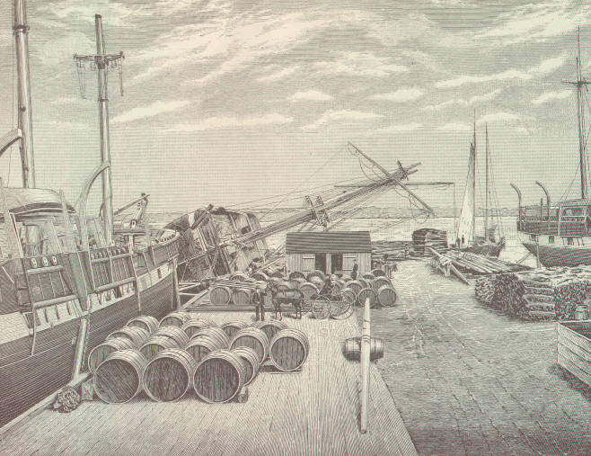
3.1 What was it like to work on a whaling ship?
The US National Park Service’s New Bedford Historical Park website offers this summary:
Though the sea is traditionally understood as romantic landscape, whaling was not a romantic business. In the earliest years of the industry, whalemen were from seafaring communities and were brought up to view the ship as their workplace.
In addition to being dirty and dangerous, whaling was monotonous work. Life onboard consisted of long periods of boredom; for weeks, even months, no whales would be seen. The crew would repair gear, write letters, play games and music, and carve scrimshaw — pieces of whale bone or tooth — to pass the time. Food and water would often become foul, and fights would break out among the crew because of the uncomfortable conditions. Men of all ranks and races faced danger from injury, illness, shipwreck, drowning, and piracy.
Whale sightings equated to short bursts of excitement as the men rushed to catch the whale, and then kill and process it.
For more insight, see the good overview article Whaling The Old Way: Life on a nineteenth-century whaler was thrilling, tedious, and often disgusting (Williford 2012).
3.2 Voyages starting each year
The voyages table includes 15,608 voyages of 2,832 known vessels, most making multiple voyages, and 1,084 voyages for which the name of the vessel is unknown. The first voyage set out in 1667; the last voyage returned in 1937. There is a lot of missing data and noticeable errors due to gaps in record keeping, illegible text, or oversights in transcription. See Section 11.1 Dealing with errors duplicates and omissions.
The number of voyages peaked in the 1840s-1860s.
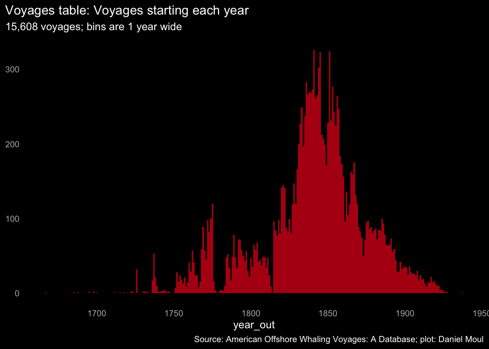
There are multi-year intervals in which the number voyages declined a lot. Below I note the wars and other disturbances I speculate most likely caused these declines:
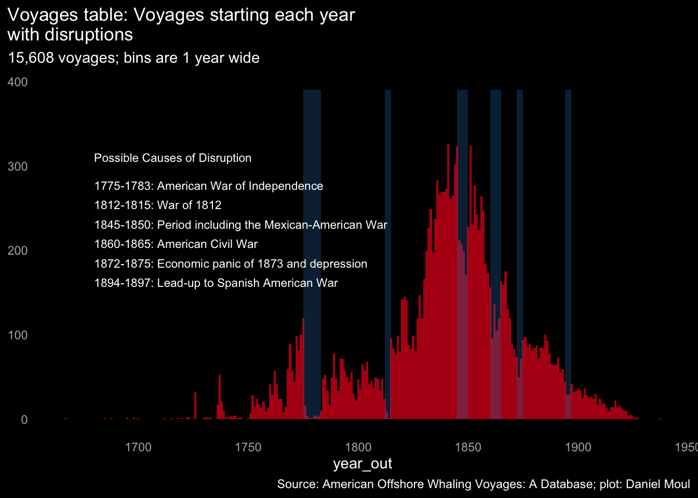
The logbook table contains a subset of these voyages: 1,381 voyages (including duplicates) starting in the years 1784 to 1920. Some include gaps between observations greater than one year, which suggest serious data quality issues (for example, they probably encompass multiple journeys). Removing duplicate voyages and ones with gaps greater than one year leaves the 1,346 voyages shown in yellow below:
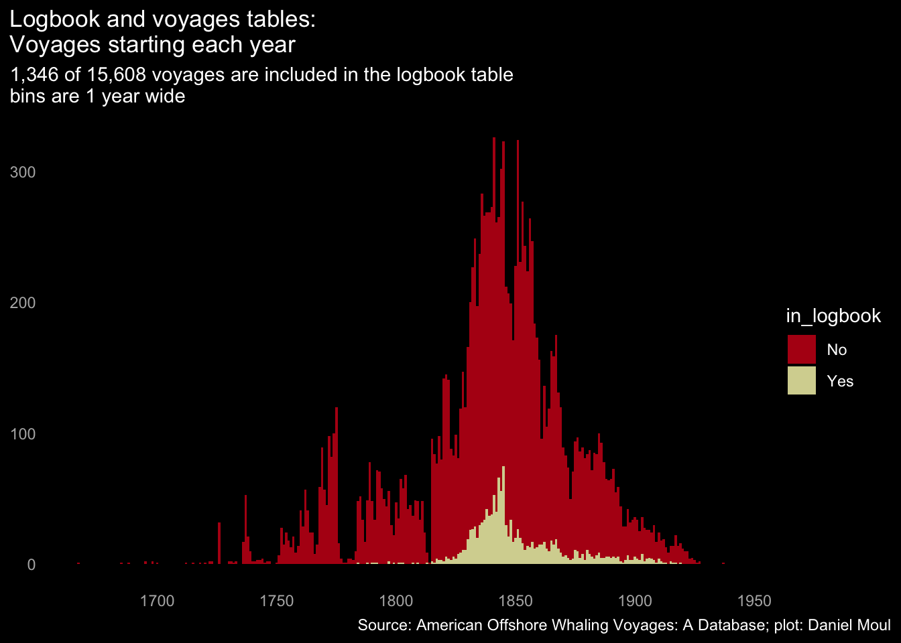
Zooming in on these 1,346 voyages:
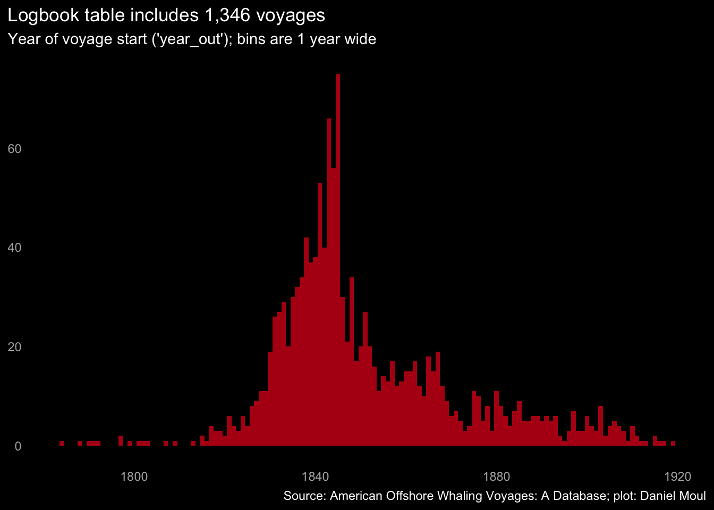
3.3 Voyage duration
Many of the voyages in the dataset curated by Maury and Townsend include year_out and year_in but not the more detailed day_out and day_in: There are only 496 voyages with the data necessary to calculate voyage duration.
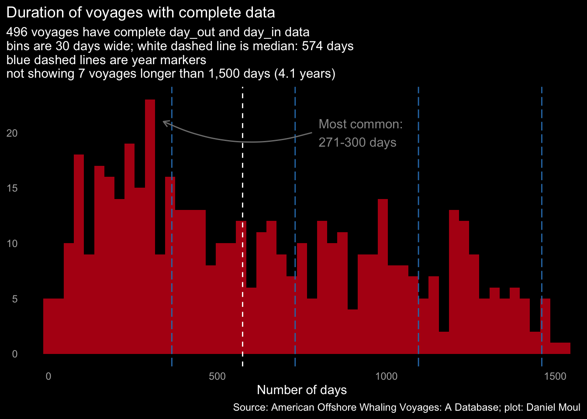
To have more voyages to work with I enriched the data for voyages having only year_out and year_in by simulating missing data, either by day of the year (yday) or voyage duration, weighted by the frequencies of existing values.
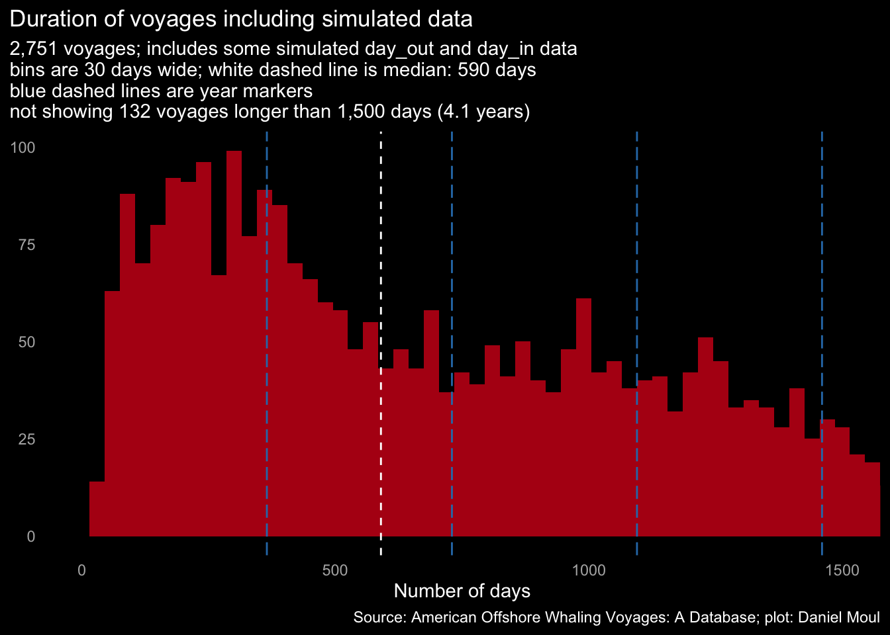
During the peak whaling decades and indeed the whole second half of the nineteenth century, there was more variety in the duration of voyages (principally, there were more longer voyages). Again, I include simulated data so I can work with more data points. This density plot shows the distribution of voyage length in each decade. The height of a point on each curve is relative to the rest of the decade (horizontally), not relative to other decades (vertically):
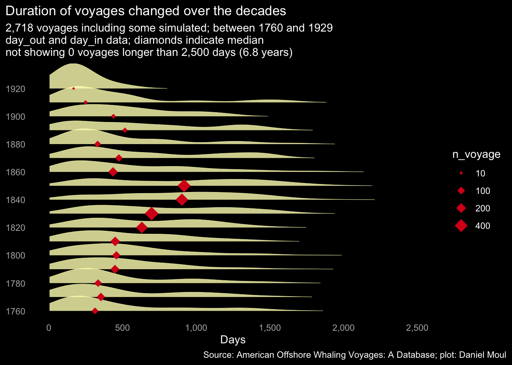
3.4 Observations in the logbooks
Many daily observations are missing in the dataset. It seems Townsend was only interested in observations when there was a strike (and mainly recorded year_out and year_in without additional date information), CoML gathered daily observations where possible, and Maury was somewhere in the middle. Thus where there were duplicate logbook records, I favored CoML then Maury over Townsend when preparing a set of distinct voyages. In all places referring to logbook records I use this consolidate set.
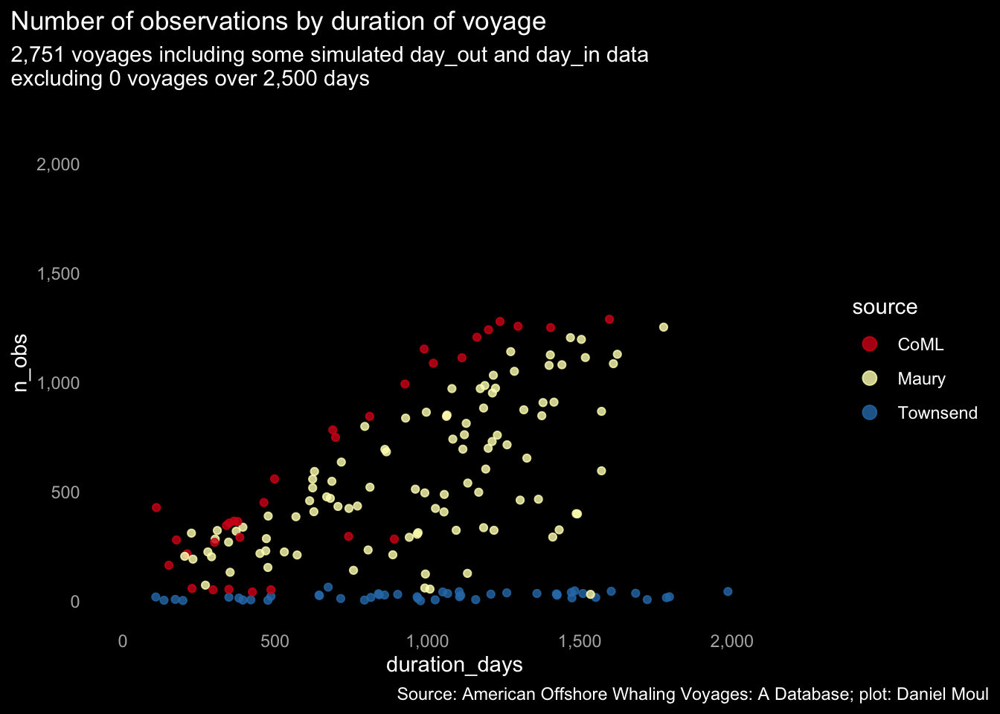
The median voyage duration was 590 days (1.6 years). The median number of observations per voyage was 140; multiple observations were recorded on days when there were one or more strikes. At the low end of n_obs, even after removing voyages with observation gaps > 1 year, one can see the set of mostly Townsend-sourced voyages in the very steep line at the left in a plot of the empirical cumulative density:
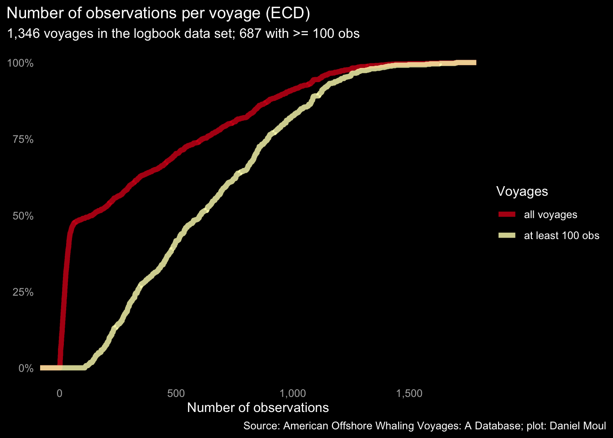
Does the number of observations per voyage change per decade? Yes. In the middle decades of the 1800s there were more (suggesting longer voyages and/or fewer Townsend-sourced voyages) as well as more voyages.
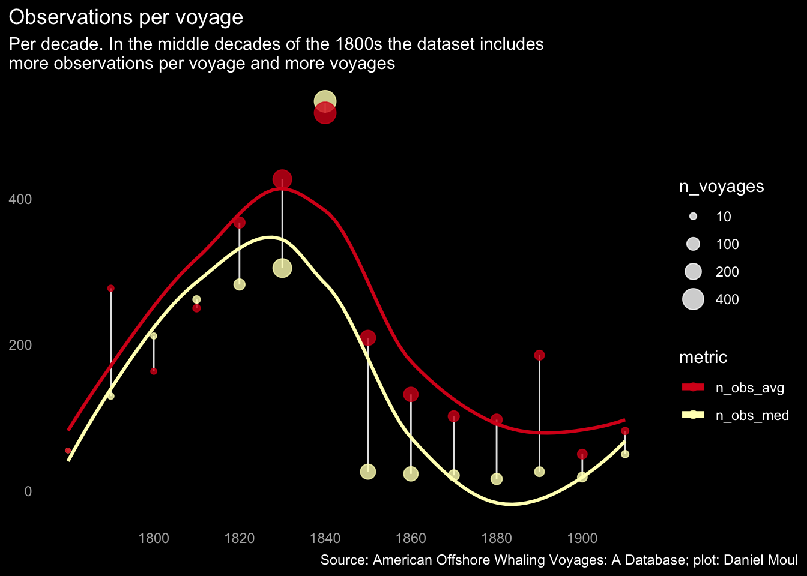
Same information by source:
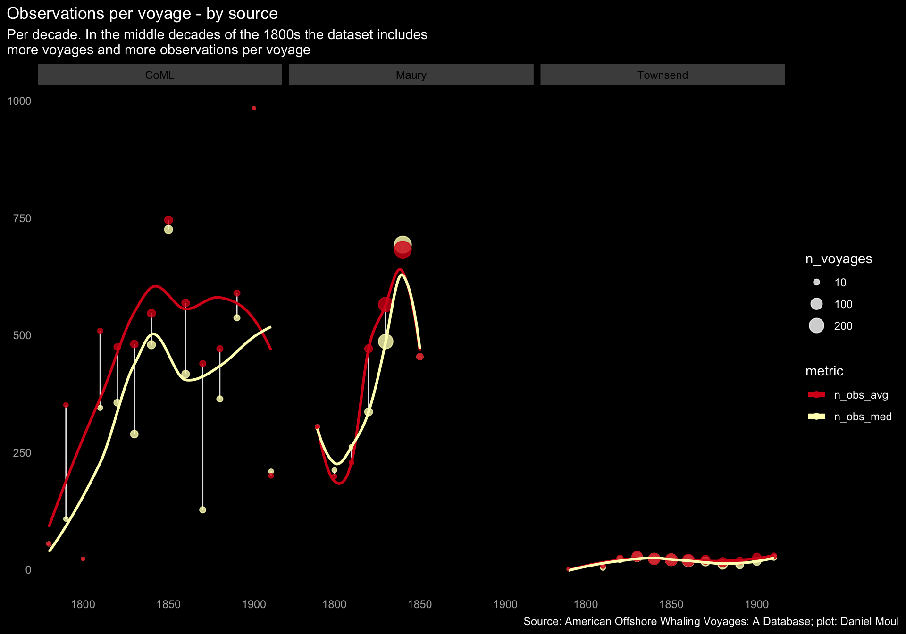
After removing 14 voyages with gaps between observations greater than one year, the great majority of observations are the same day or one day after the previous observation. This will be helpful for plotting routes traveled in Chapter 10 Voyage Tracks.
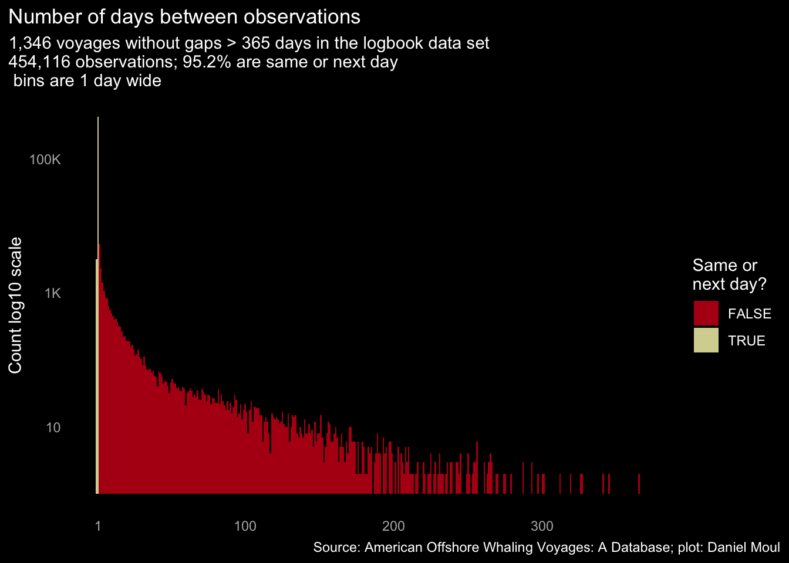